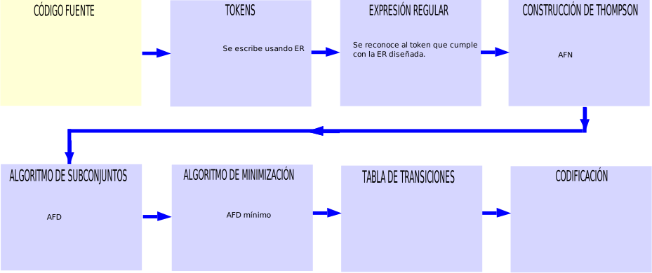

Diagrama a bloques del proceso de construcción de un analizador léxico
Para hacer la conversión de ER a AFN. Se usa la construcción de Thompson:

Ejercicio 2
Convertir la ER en un autómata AFD:
(a|b)*a(a|b)(a|b)
El autómata AFN de la ER, se obtiene aplicando los modelos de Thompson de las operaciones básicas de las ERs:
El autómata AFN de la ER anterior:
cerradura-ε ({0}) = {0, 1, 2, 4, 7, 8} = q0
Se debe obtener el vocabulario:.
Σ = {a, b}
Ahora se aplica la operación movimiento a q0:.
q0 = {0, 1, 2, 4, 7, 8}
cerradura-ε (mov(qo, a)) = cerradura-ε({3, 9}) = {3, 9, 6, 7, 8, 1, 2, 4, 10, 11, 13} = q1
cerradura-ε (mov(qo, b)) = cerradura-ε({5}) = {5, 6, 7, 8, 1, 2, 4} = q2
Ahora se aplica la operación movimiento a q1:.
q1 = {3, 9, 6, 7, 8, 1, 2, 4, 10, 11, 13}
cerradura-ε (mov(q1, a)) = cerradura-ε({3, 9, 12}) = {3, 9, 12, 6, 7, 8, 1, 2, 4, 10, 11, 13, 15, 16, 17, 19} = q3
cerradura-ε (mov(q1, b)) = cerradura-ε({5, 14}) = {5, 14, 6, 7, 8, 1, 2, 4, 15, 16, 17, 19} = q4
Ahora se aplica la operación movimiento a q2:.
q2 = {5, 6, 7, 8, 1, 2, 4}
cerradura-ε (mov(q2, a)) = cerradura-ε({3, 9}) = {3, 9, 6, 7, 8, 1, 2, 4, 10, 11, 13} = q1
cerradura-ε (mov(q2, b)) = cerradura-ε({5}) = {5, 6, 7, 8, 1, 2, 4} = q2
Ahora se aplica la operación movimiento a q3:.
q3 = {3, 9, 12, 6, 7, 8, 1, 2, 4, 10, 11, 13, 15, 16, 17, 19}
cerradura-ε (mov(q3, a)) = cerradura-ε({3, 9, 12, 18}) = {3, 9, 12, 18, 6, 7, 8, 1, 2, 4, 10, 11, 13, 15, 16, 17, 19, 21, 22} = q5
cerradura-ε (mov(q3, b)) = cerradura-ε({5, 14, 20}) = {5, 14, 20, 6, 7, 8, 1, 2, 4, 15, 16, 17, 19, 21, 22} = q6
Ahora se aplica la operación movimiento a q4:.
q4 = {5, 14, 6, 7, 8, 1, 2, 4, 15, 16, 17, 19}
cerradura-ε (mov(q4, a)) = cerradura-ε({3, 9, 18}) = {3, 9, 18, 6, 7, 8, 1, 2, 4, 10, 11, 13, 21, 22} = q7
cerradura-ε (mov(q4, b)) = cerradura-ε({5, 20}) = {5, 20, 6, 7, 8, 1, 2, 4, 21, 22} = q8
Ahora se aplica la operación movimiento a q5:.
q5 = {3, 9, 12, 18, 6, 7, 8, 1, 2, 4, 10, 11, 13, 15, 16, 17, 19, 21, 22}
cerradura-ε (mov(q5, a)) = cerradura-ε({3, 9, 12, 18}) = {3, 9, 12, 18, 6, 7, 8, 1, 2, 4, 10, 11, 13, 15, 16, 17, 19, 21, 22} = q5
cerradura-ε (mov(q5, b)) = cerradura-ε({5, 14, 20}) = {5, 14, 20, 6, 7, 8, 1, 2, 4, 15, 16, 17, 19, 21, 22} = q6
Ahora se aplica la operación movimiento a q6:.
q6 = {5, 14, 20, 6, 7, 8, 1, 2, 4, 15, 16, 17, 19, 21, 22}
cerradura-ε (mov(q6, a)) = cerradura-ε({3, 9, 18}) = {3, 9, 18, 6, 7, 8, 1, 2, 4, 10, 11, 13, 21, 22} = q7
cerradura-ε (mov(q6, b)) = cerradura-ε({5, 20}) = {5, 20, 6, 7, 8, 1, 2, 4, 21, 22} = q8
Ahora se aplica la operación movimiento a q7:.
q7 = {3, 9, 18, 6, 7, 8, 1, 2, 4, 10, 11, 13, 21, 22}
cerradura-ε (mov(q7, a)) = cerradura-ε({3, 9, 12}) = {3, 9, 12, 6, 7, 8, 1, 2, 4, 10, 11, 13, 15, 16, 17, 19} = q3
cerradura-ε (mov(q7, b)) = cerradura-ε({5, 14}) = {5, 14, 6, 7, 8, 1, 2, 4, 15, 16, 17, 19} = q4
Ahora se aplica la operación movimiento a q8:.
q8 = {5, 20, 6, 7, 8, 1, 2, 4, 21, 22}
cerradura-ε (mov(q8, a)) = cerradura-ε({3, 9}) = {3, 9, 6, 7, 8, 1, 2, 4, 10, 11, 13} = q1
cerradura-ε (mov(q8, b)) = cerradura-ε({5}) = {5, 6, 7, 8, 1, 2, 4} = q2